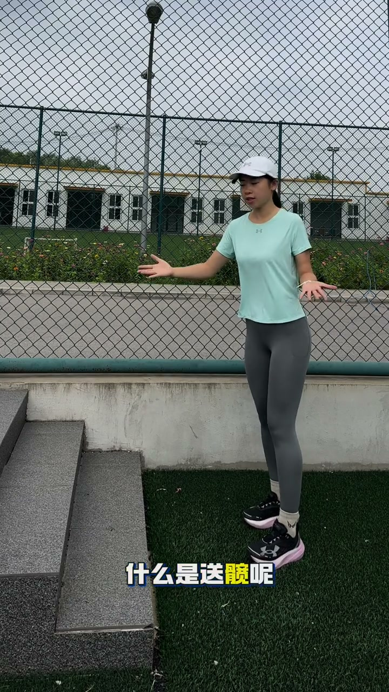
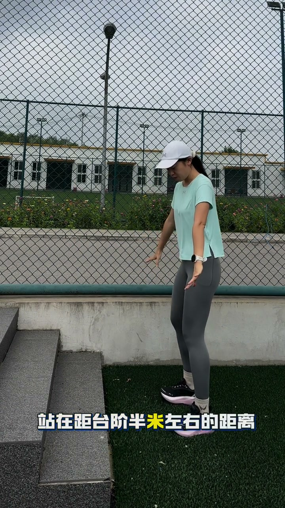
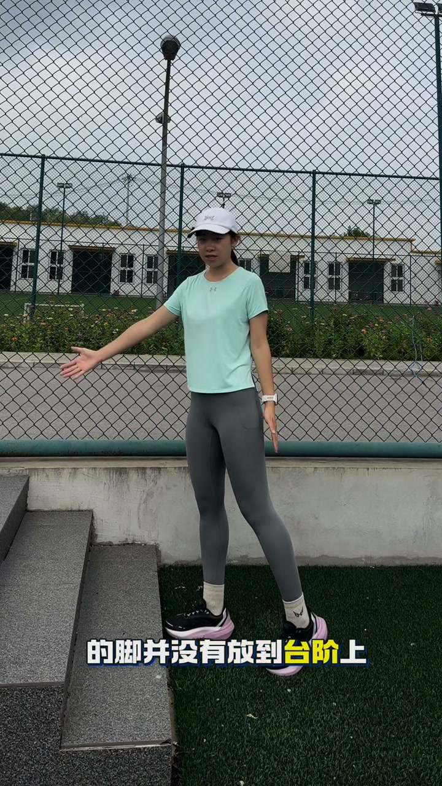
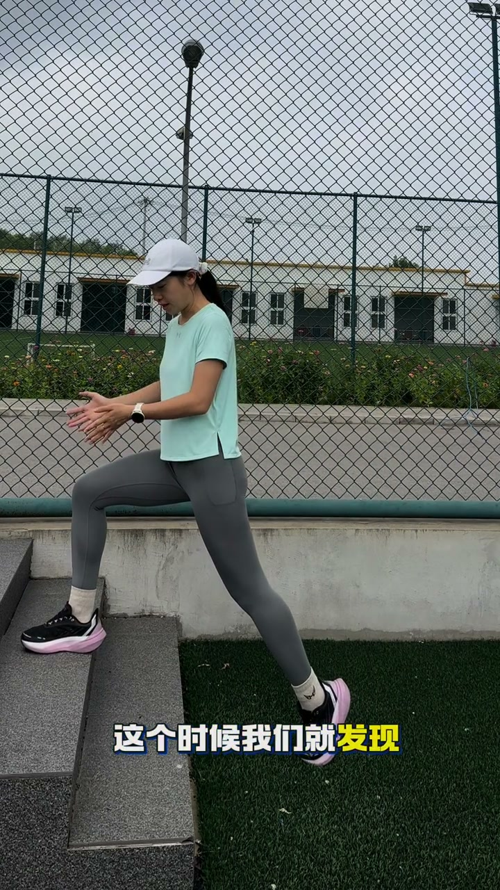
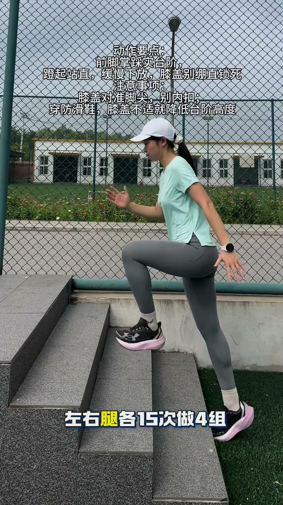
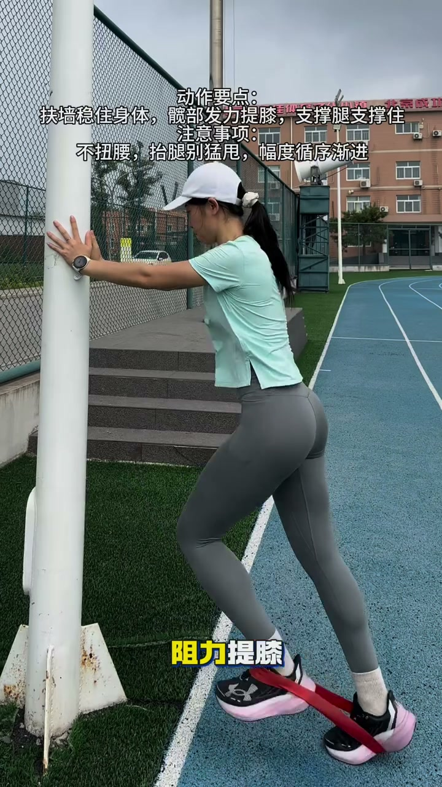

内容要点
知识结构
教练一句话概括核心概念：送髋就是跑步时髋部向前推的动作。它不难，但需要专项训练。
站在距台阶半米处，抬起腿往台阶上放。最初脚够不到台阶，但当屁股往前顶、身体前倾后，脚自然放到了台阶上——这多出来的一截距离就是送髋产生的额外位移。
①台阶上步 左右各15次×4组 ②扶墙侧摆腿 左右各10次×4组 ③阻力提膝 左右各15次×4组。
送髋不是"迈大步"——迈大步靠小腿前伸，容易膝盖超伸受伤。送髋是用髋关节的主动前推来增加步幅，安全又高效。
图文实录
开场：什么是送髋
教练开门见山："什么是送髋呢？这就是送髋。送髋其实并不难"。用最简洁的方式点明主题，随即用台阶演示把抽象概念具象化。

台阶演示第一步：站好位置
"我们找到一个台阶，站在距台阶半米左右的距离，将一只脚抬起来往前放"。教练在半米外抬起一只脚试图放到台阶上——此时脚还够不到台阶，这是演示的关键起点。

台阶演示第二步：屁股往前顶
"这时候我们会发现，我们脚并没有放到台阶上。但是呢，我们将腿抬起来，屁股往前顶，身体往前倾。这个时候我们就发现，我们的腿放到台阶上了"。这就是送髋的核心：不是用力迈腿，而是臀部前推+身体前倾，髋关节的位移把腿"送"上了台阶。

总结：送髋产生的额外位移
"这就是所谓的送髋。而拉出来这么长的距离呢，就是送髋产生的额外位移"。教练用手比划出从初始位置到台阶之间多出来的距离——这就是每一步靠送髋多跑的里程。如果步频不变，步幅每增加 5 厘米，每公里就快好几秒。

训练动作一：台阶上步
"台阶上步，左右腿各15次做4组"。直接在台阶上模拟送髋的发力模式，是最直接的专项训练。

训练动作二&三：扶墙侧摆腿 + 阻力提膝
"扶墙侧摆腿，左右腿各10次做4组；阻力提膝，左右腿各15次做4组。赶快收藏练起来吧"。侧摆腿训练髋关节外展肌群，阻力提膝强化髋屈肌力量——两个动作从不同角度提升髋部发力能力。
